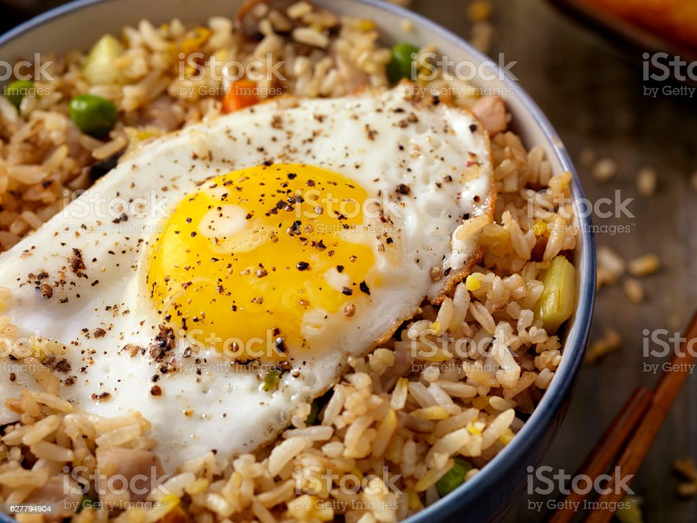

Fried Rice

Description
Fried rice is a dish of cooked rice that has been stir-fried in a wok or a frying pan and is usually mixed with other ingredients such as eggs, vegetables, seafood, or meat. It is often eaten by itself or as an accompaniment to another dish.
Fried rice facts for kids
Fried rice is a dish of cooked rice that has been stir-fried in a wok or a frying pan and is usually mixed with other ingredients such as eggs, vegetables, seafood, or meat. It is often eaten by itself or as an accompaniment to another dish. Fried rice is a popular component of East, Southeast and certain South Asian cuisines. As a homemade dish, fried rice is typically made with ingredients left over from other dishes, leading to countless variations. Being an economical hodgepodge, the same approach is often taken with fried noodles or pyttipanna as well.
Ingredients
- Rice
- Vegetables
- Eggs
- Meat
- Onions
- Garlic
- Vegetable Oil
- Salt
- Cucumber
- Tomato
Steps
- Add the boiled rice to the stock in a medium pot and cook on medium heat until the water is dried up.
- Preheat the oil in a pan on medium to high heat, throw in the onions, and fry for a minute or two; add the scallions, mixed vegetables, thyme, curry powder, salt, and stock Cube
- Throw in the beef liver and rice — Stir-fry for about 3 to 5 minutes on high heat
- Take it off the heat and serve.
Notes
- The white rice should be cooked tender but still firm to bite (like you cook your pasta al-dente). Overcooking the rice will result in mushy fried rice.
- Fried rice is best enjoyed when the Veggies remain crunchy, so do not overcook your veggies.
- You need to increase the heat and stir continuously to get that nice coveted crisp during frying.